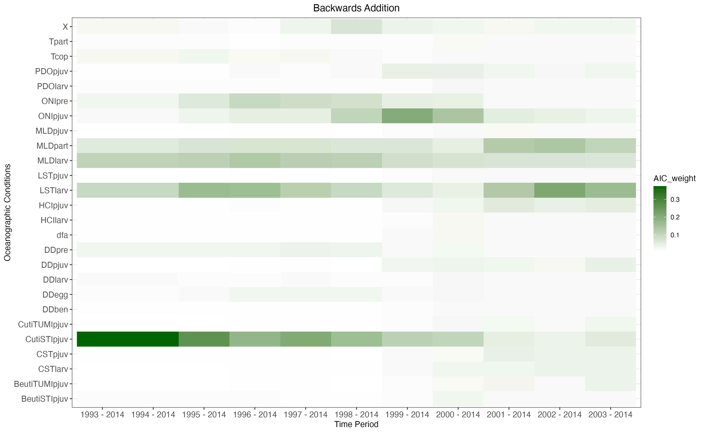
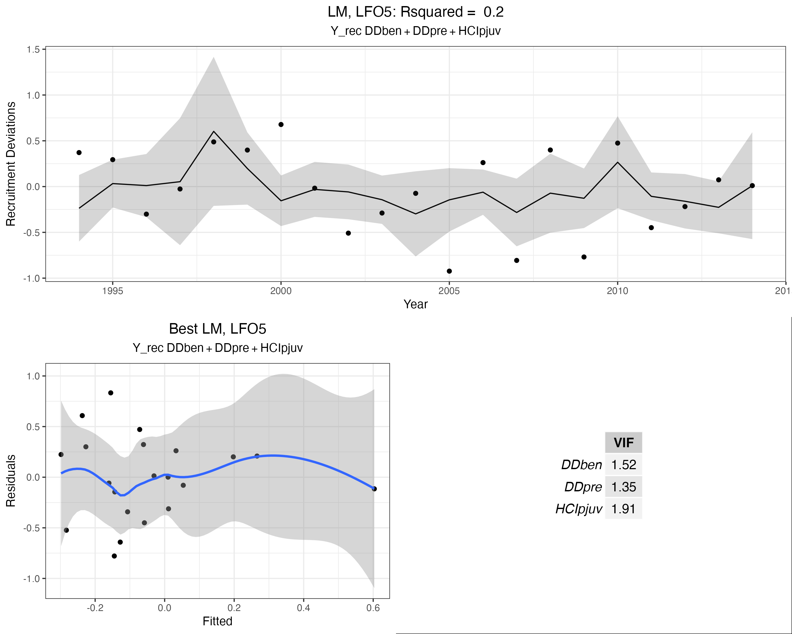

| Stage | Time.period | Depth | Hypothesis | Name | Covariates | Data.Source |
|---|---|---|---|---|---|---|
| Preconditioning | Jul (Year 0) - Mar (Year 1) | 90 - 180 m | (H1) Higher temperature (degree days) increases food demand, resulting in lower egg production, ultimately resulting in lower recruitment. | DDpre | Degree days | GLORYS |
| (H2) El Niño/La Niña cause shifts in temeprature and precipitation which lead to changes in recruitment success. | ONIpre | Ocean Niño Index | Leising et al. (2024) | |||
| Copulation | Aug - Oct | 90 - 180 m | (H3) Temperature may act as a spawning cue for initiation of copulation. | Tcop | Temperature | GLORYS |
| Egg fertilization | Nov - Dec | 90 - 180 m | (H4) Higher temperature (degree days) affects delayed fertilization and development of the embryo. | DDegg | Degree days | GLORYS |
| Parturition | Jan - Apr (peak in Feb) | 0 - 180 m | (H5) Temperature may act as a cue for birth of live larvae. | Tpart | Temperature | GLORYS |
| (H6) Location of mixed layer depth may limit where in the water column mothers give birth. | MLDpart | Location of mixed layer depth | GLORYS | |||
| Larvae | Feb - Mar | 0 - 90 m | (H7) Growth/predation hypothesis: Growth rate is faster in warmer water, leading to reduced time vulnerable to predators. | DDlarv | Degree days | GLORYS |
| (H8) Cross-shelf transport to settlement habitat affects recruitment. | CSTlarv | Net cross-shelf transport | GLORYS | |||
| (H9) Long-shore transport to settlement habitat affects recruitment. | LSTlarv | Net long-shore transport | GLORYS | |||
| (H10) Location of mixed layer deph may limit where they are able to move in the water column, affecting transport and recruitment. | MLDlarv | Location of mixed layer depth | GLORYS | |||
| (H11) The presence of cool upwelled waters in the surface mixed-layer affects the availability of nutrients and food for growth. | HCIlarv | Habitat Compression Index | Leising et al. (2024) | |||
| (H12) El Niño/La Niña cause shifts in temeprature and precipitation which lead to changes in recruitment success. | ONIlarv | Ocean Niño Index | Leising et al. (2024) | |||
| (H13) Changes in wind speed and direction impact upwelling/downwelling processes, ultimately impacing recruitment. | PDOlarv | Pacific Decadal Oscillation | Leising et al. (2024) | |||
| Pelagic juvenile | Apr - Aug | 30 - 130 m | (H14) Growth/predation hypothesis: Growth rate is faster in warmer water, leading to reduced time vulnerable to predators. | DDpjuv | Degree days | GLORYS |
| (H15) Cross-shelf transport to settlement habitat affects recruitment. | CSTpjuv | Net cross-shelf transport | GLORYS | |||
| (H16) Long-shore transport to settlement habitat affects recruitment. | LSTpjuv | Net long-shore transport | GLORYS | |||
| (H17) Location of mixed layer deph may limit where they able to move in the water column, affecting transport and recruitment. | MLDpjuv | Location of mixed layer depth | GLORYS | |||
| (H18) Food availability impacts growth and survival. | ZOOpjuv | Zooplankton availability | Leising et al. (2024) | |||
| (H19) The presence of cool upwelled waters in the surface mixed-layer affects the availability of nutrients and food for growth. | HCIpjuv | Habitat Compression Index | Leising et al. (2024) | |||
| (H20) El Niño/La Niña cause shifts in temeprature and precipitation which lead to changes in recruitment success. | ONIpjuv | Ocean Niño Index | Leising et al. (2024) | |||
| (H21) Changes in wind speed and direction impact upwelling/downwelling processes, ultimately impacing recruitment. | PDOpjuv | Pacific Decadal Oscillation | Leising et al. (2024) | |||
| (H22) Coastal upwelling impacts nutrient and food availability which contributes to growth and survival. | CutiSTIpjuv | Coastal Upwelling Transport Index | Jorgensen et al. (2024) | |||
| (H23) Coastal upwelling impacts nutrient and food availability which contributes to growth and survival. | CutiTUMIpjuv | Coastal Upwelling Transport Index | Jorgensen et al. (2024) | |||
| (H24) Nitrate is essential for primary productivity, impacting presence of phytoplankton available as a food source. | BeutiSTIpjuv | Biological Effective Upwelling Transport Index | Jorgensen et al. (2024) | |||
| (H25) Nitrate is essential for primary productivity, impacting presence of phytoplankton available as a food source. | BeutiTUMIpjuv | Biological Effective Upwelling Transport Index | Jorgensen et al. (2024) | |||
| Benthic juvenile | Sept - Dec | 180 - 549 m | (H26) Growth/predation hypothesis: Growth rate is faster in warmer water, leading to reduced time vulnerable to predators. | DDben | Degree days | GLORYS |
| (H27) Food availability impacts growth and survival. | ZOOben | Zooplankton availability | Leising et al. (2024) | |||
| (H28) Length of the upwelling season impacts nutrient and food availability which contributes to growth and survival. | LUSI | Length of Upwelling Season Index | Leising et al. (2024) |
Oceanographic Drivers of northern Yellowtail
Oceanographic indicators of northern Yellowtail
Darby et al. In Prep examined the relationship between recruitment deciations from the 2017 northern Yellowtail rockfish assessment (Taylor et al. 2017) following methods of Haltuch et al. 2020. The oceanographic conditions investigated (Table 1) were based on an extensive literature review of conditions impacting northern Yellowtail rockfish throughout different lifestages linked to recruitment. Previous assessments used Regional Ocean Modeling System (ROMS) but Petrale 2023 identified inconsistencies in oceanographic conditions impacting groundfish recruitment. We used an alternative model, Global Ocean Physics Reanalysis (GLORYS), for conditions that were identified to have inconsistencies in the 2023 Petrale Sole assessment (citation) and which was used for the Pacific hake assessment (citation). Upwelling conditions were not available from GLORYs and thus a ROMs upwelling time series was used.
The study area encompassed the region from Xlat to Ylat in teh California Current Ecosystem with individual predictors limited by depth and/or distance from the shore (Table 1). Model selection resulted in a single model with four oceanographic varibles explaining 65% of the deviation in recruitmnet deviations. Recruitment deviations were:
Negatively associated with later spring transition of the upwelling season derived from the Coastal Upwelling Transport Index (CutiSTIpjuv)
Recruitment is maximized when mixed layer depth at the larval stage (MLDlarv) is one standard deviation above average
Recruitment is maximized when HCI during the larval stage (HCIlarv) is at average values
Recruitment is maximized when long-shore transport during the larval stage (LSTlarv) is above or below average.
These results indicate that output from oceanographic models might be a useful basis for an environmental index of recruitment for northern Yellowtail rockfish to allow for better model precision and near-term forecasting. Single oceanogrphic conditions that are most important for northern Yellowtail recruitment vary through time, and as a result so does the predictive capacity of individual predictors. This highlights the values of using multiple environmental conditions in a single index.
Oceanographic predictors of northern Yellowtail recruitment
Oceanographic conditions (Table 1) linked to northern Yellowtail recruitment fall into three primary categories: temperature, transit, and upwelling (Figure 1), many of which convary within each grouping (Figure 2)
Univariate Analysis
Univariate linear models and generalized additive models were used to understand the relative importance of single drivers for model fit and predictive capacity of oceanographic conditions on northern Yellowtail rockfish recruitment. We compared models with a single covariate using leave-one-out cross validation (LOO-CV) and leave-future-out cross validation (LFO-CV). We considered two ways of looking at LFO-CV, leaving the last 10 years of data out of the model and predicting one year ahead and leaving only the last 5 years of data out of the model and predicting one year ahead. Models were ranked based on the improvement of root mean square error (RMSE) relative to a model using year of observation as a predictor, such that the next year is predicted based on the previous year. The model fits and 5 and 10 years of prediction are plotted for linear models in Figure 13 and Figure 14 and for generalized additive models in Figure 15 and Figure 16.
For linear model approaches, we find that the improvement in RMSE depends on selection criteria used (Figure 3). When applying LOO-CV, only five oceanographic conditions improved RMSE relative to a year predictor. Tcop, MLDpart, MLDlarv, DDpre, and CutiSTIpjuv2 were the top 5 oceanographic conditions for predicting recruitment ranging from 2.5% - 12.5% improvement in relative RMSE. 10-year LFO-CV had similar results, where MLDpart, MLDlarv, DDpre, DDegg,and CutiSTIpjuv2 were the top 5 predictors.Relative RMSE improvement was much higher using LFO-CV, where nearly all oceanogrpahic conditions had better predictive capacity than a year-only model and relative RMSE improvement ranging from 9% - 26% among the top 5 best oceanographic conditions (Figure 3). 5-year LFO-CV had the highest improvement in RMSE relative to the year model, ranging from 68% - 80% improvement, but the best oceanographic predictors of recruitment were different than the 10-year LFO-CV and LOO-CV. The only condition that ranked in the top 5 for all selection criteria was DDpre. Tpart,PDOlarv, HCIlarv,and DDlarv were also ranked in the top 5 predictors using 10-year LFO-CV. This highlights the importance of temperature variables for predicting the last 5 years of data relative to transport or upwelling. Notably, the last 5 years of data in this analysis were 2009 - 2014,which encompasses the beginning of abnormally warm heatwave which began in December, 2013. The relative importance of temperature compared to other oceanographic conditions like settlement will be important to examine as new recruitment deviations become available.
For generalized additive models, the top supported oceanographic drivers were identical to the top oceanographic conditions for linear models by selection criteria, where the 5-year LFO-CV had more support for temperature conditions as predictors (Figure 4).
Time-varying model selection
The differences in which covariates have the most support in univariate models indicates the relative strength of different oceanographic conditions to predict recruitment of northern Yellowtail rockfish likely varies through time. To further evaluate these time varying effects and the sensitivity of time series selection to the time period used, we used AIC weights with three approaches to evaluating the time-varying importance, 1) a 10-year rolling window, 2) forward addition of 1-year starting with first ten years of data (1993 - 2002) and 3) backwards addition of 1-year starting with the last ten years of data (2014 - 2005). We applied these approaches using generalized additive models.
The 10-year rolling window illustrates which variables improve model fit the most over different time periods. Figure 5 shows LSTlarv and MLDlarv were important in the early time periods became less important in the middle time period, and more important in recent years. In contrast, ONIpre was most important during the middle windows. MLDpjuv became more important in the recent windows. Notably, AIC weight became more evenly distributed across oceanographic conditions for the most recent windows, with more AIC weight allocated to temperature variables.
The forward addition approach shows changes in the relative importance of oceanographic conditions for model fit that is informed by the earliest data in the time series. We find that CutiSTIpjuv is supported with all windows, with particularly strong support with data from 1993 - 2006 (Figure 6). Once the full time series is included in the model selection process, CutiSTIpjuv has weaker support in favor of more diffuse support for LSTlarv (which also had strong support with the earliest window), MLDlarv and temperature variables.
Using the backwards addition approach helps us examine which data are most informatibe for recent time periods and how sensitive the selection is to extending the time period further back. We find LSTlarv, and MLD variables have the greatest AIC weight in most recent years (Figure 7). As the time series is extended further back there is more support for CutiSTIpjuv, which is expected based on the rolling window and foreward selection processes.

Multivariate Analysis
Marginal Mean Improvement
After examining the fits and dynamics of univariate models, we examined the model fits and predictive capacity using the same cross validation techniques as the univariate approach. We calculated variable importance scores as the mean marginal improvement in RMSE for each cross validation technique. Marginal improvements in RMSE are dependent on both information in a predictor, as well as redundancy in information across predictors (e.g. if variable x and y are in a model, and z is highly correlated with x, adding z to a model will not improve RMSE). For any potential covariate considered in models with m predictors, we used the set of n models with m − 1 predictors that did not include that covariate as a baseline, and for each calculated the average relative change in RMSE. We fit all possible combinations of up to 3 covariates while excluding combinations that are highly correlated from being included in the same model.
We show the percent change in RMSE in Figure 8 for all covariates and for the top 5 models in Figure 9. In general, the best covariates had strong agreement using marginal mean imrpovement in RMSE in multivariate models as they did with AIC weights with univariate models and still varied with cross validation techniques.
Best Models with up to 3 covariates
The best models for each cross validation type (LFO-5, LFO-10, and LOO) and model type (LM or GAM) included some combination of the oceanogrpahic conditions identified using marginal improvement of RMSE.
Linear Models
When applying LOO to linear models the top performing model included LSTpjuv, ONIpjuv and CutiSTIpjuv. This model had a R2 value of 0.48 and all variance inflation factors were less than 2 (Figure 10). CutiSTIpjuv was the only variable that was ranked in the top 5 based on marginal improvement of RMSE for LOO of LMs.
When applying LFO-5 to linear models the top performing model included DDben, DD~pre and HCIpjuv (Figure 11). This model had a R2 value of 0.20 and all variance inflation factors were less than 2.

When applying LFO-5 to linear models the top performing model included DDben, DD~pre and HCIpjuv (Figure 12). This model had a R2 value of 0.4 and all variance inflation factors were less than 2.
Generalized Additive Models
Best model using strongest predictors